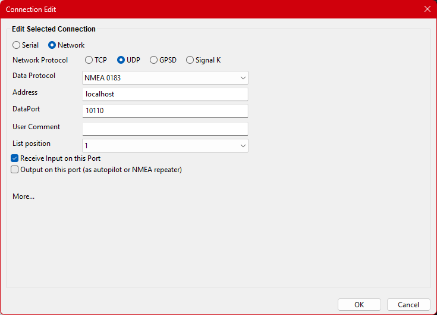
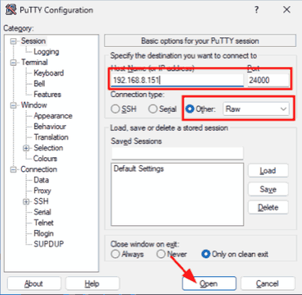

Test-Troubleshoot
VDRplayer Setup for Testing
Prerequisites:
-
Install Python, from Python download.
-
Download VDRplayer.py - a program to replay NMEA sentences, from VDRplayer download.
-
A text file of recorded NMEA bus activity. There is an example, Hakefjord.txt, at the link above.
Example: Replay NMEA over the local network when the router address is 192.168.1.0
-
Configure the sending computer’s network UDP output IP Address: 192.168.1.255 (local broadcast).
-
Configure the receiving computer’s UDP input IP address 0.0.0.0 and Dataport 10110.
-
From a command line run:
python VDRplayer.py <nmeatextfile.txt> 192.168.1.255 10110 0.05 UDP -
Result: Any receiving machine on the network can then access the the data being sent by VDRPlayer.
-
If the client is running on the same machine as VDRplayer, then localhost or 127.0.0.1 can be used.
Note: The time delay of 0.05 (50mS) is the delay between each line in the file. Note: DataPort 10110 is somewhat arbitrary but it is the "undocumented standard" for NMEA over IP and must match the client receiver port number. However, any port number permitted by the local firewall will work. It is best not to use other well-known port numbers such as 80, 22, etc.
Example
UDP can use a multicast address or unicast address. Assume you wish to use multicast and your network is 192.168.1.xxx (typical local home network). This command:
./VDRplayer.py Hakefjord.txt --UDP --port=10110 --dest 192.168.1.255 --sleep=0.07 --repeat=100000
Would multicast to any device on the network. On a computer connected to this network (say its IP address is 192.168.1.18 but any IP on this network will work) you would create this network connection:

Then OpenCPN will receive the UDP messages.
One user reports:
As I am recording ShipDriver Plugin tracks at 50-100 kt, playback speed is not an issue. And I’ve now created a triangular race course route that doubles around itself twice, 6 legs around 3 waypoints. Shipdriver follows it faithfully with no confusion over the repeats and your VDRplayer replays it perfectly. This has been often buggy on actual racing, or maybe it has been me, Navigator. But doing these simulations is very helpful and confidence building.
Voyage Data Recorder Plugin
Use of this plugin to replay recorded NMEA data files is also very useful. See Voyage Data Recorder plugin
Troubleshoot NMEA 0183 with Putty
To completely rule out a fault by OpenCPN, you may download PuTTY from PuTTY download and configure it according to the attached screenshot. You should see a constant flow of NMEA 0183 messages in the window that appears. If it ever stops for a few seconds, something else in your system is at fault.

Troubleshooting Connections
Windows Serial COM Ports stop working (GPS/GNSS)
-
Check the cables and connectors, and for USB Port timeout.
-
Check Windows' USB Power Management. Prevent Windows from Turning Off USB Devices
Windows WiFi Router with NMEA 0183 Data and Radar
Windows' networking default is to turn off the unused WiFi or Ethernet, such that only one is operational. This can create problems when a radar is hardwired to an Ethernet port and communications are needed via WiFi. See how this was solved on CruiserForum OpenCPN, by Be Free, Post 30 Still trouble running NMEA data stream and Radar in parallel. Any help?
WiFi/Ethernet on/off test
Unplug the Ethernet radar, disconnect WiFi, then plugin Ethernet followed by connecting to WiFi. WiFi router data stream won’t work until radar is depowered. Similarly, if WiFi is connected first, Ethernet won’t work.
-
Case WiFi: Reboot, when connected to the router via WiFi, the WiFi data stream works (radar is off).
-
Case Ethernet: The WiFi router data stream fails when radar Ethernet cable is plugged in and powered on.
Be Free Post 40 "The ipconfig output shows the Ethernet and the WiFi both connected at the same time. The route table shows reasonable routes to both networks. That is progress. That means you should be sending data out on WiFi. Now the challenge is to find out where the data is going. From a command prompt type ping 192.168.1.1 That will send a short message to your router and your router will echo it back to you."
Wholybee Post 41: For UDP broadcast, the sender (PC) should have an IP address of 192.168.1.255. The receiver, the IP address doesn’t matter, but is usually set to 0.0.0.0. For UDP traffic the Dataport number must be defined. The Dataport number must be the same on each device that sends or receives that UDP data. The NMEA default Dataport is 10110.
Be Free Post 42: "It appears that the address field in a UDP output connection is the destination for the UDP packet, not the source. IF that is correct, then the address should be 192.168.1.255 … to broadcast the data. It would be the address of the specific machine on the network … to restrict it."
Be Free Post 55: "Enter 192.168.1.255 in the UDP connection in OpenCPN in place of the xxx.xxx.xxx.xxx:xxxxxx"
S/V Jedi Post 57: "There are multiple ways of doing that. Creating two TCP/IP interfaces on a Windows computer, one wired and one wireless, is one option. You can also connect both NMEA WiFi router and the radar over just one interface, even just the wireless interface if it is fast enough, and this is what I would recommend.
Wholybee Post 50: The following is working on my test system.
-
Network, Output, UDP N0183, 192.168.1.255:10110
-
Network, Input, TCP N0183, 127.0.0.1:10110 (Local Server)